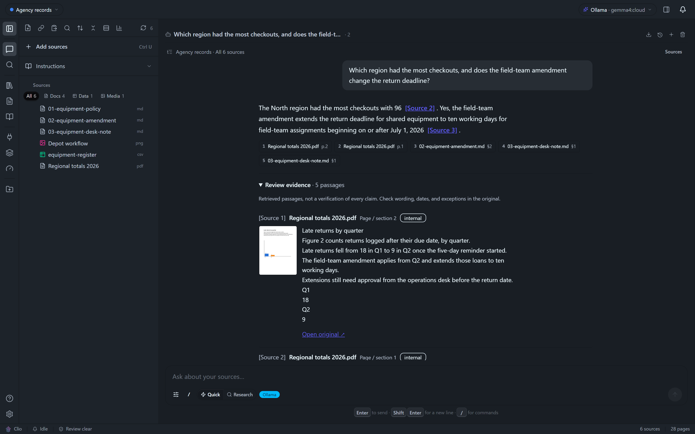
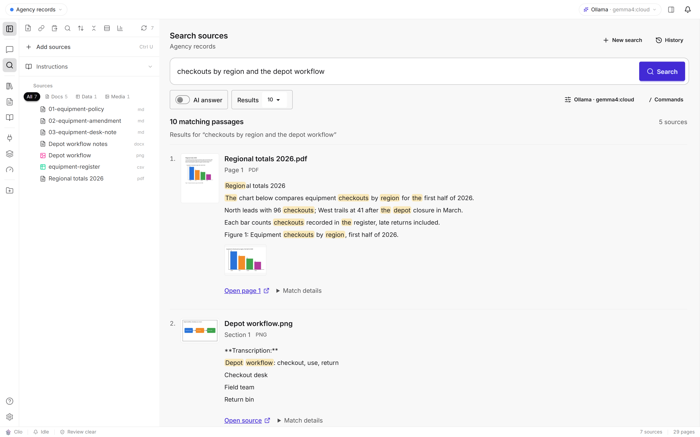
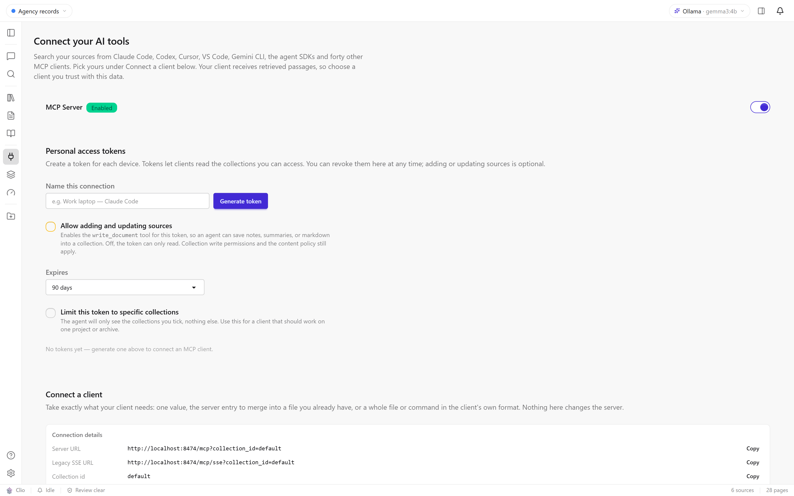
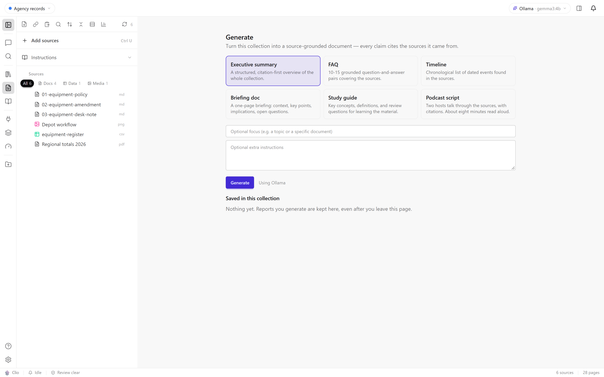
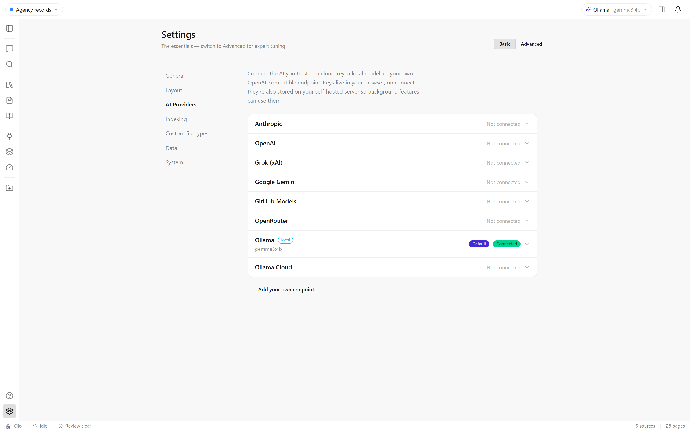

Self-hosted · open source · MIT
Clio is a knowledge base you run yourself, for people and for the AI agents they use. Add your documents, ask questions that are answered with citations, and hand the same knowledge to Claude, ChatGPT or any MCP client.[README]
docker run -d --name clio -p 127.0.0.1:8473:8473 -e BIND_ADDRESS=127.0.0.1 -v clio-data:/app/data ghcr.io/jordanboyce/clio:slim
Then open localhost:8473View the source on GitHub

Each claim carries a [Source N] marker. The sources sit in a strip under the answer, with their page numbers.
Every cited passage opens in place, labelled with where it sits in the file and how sensitive it is.
A thumbnail of the page, the chart embedded in it, and a link to the original. You read the source, never a paraphrase of it.
This page follows the product's own rule. A bracketed marker like [BRAND] links to the document in the repository that backs the claim beside it. Screenshots show the fictional sample records that ship with Clio.
A look around
Find searches by meaning and by exact words at once, then a local reranker orders the best candidates. Codes, names, numbers and quotes stay intact, and nothing leaves the machine.[README]

Turn on agent access and give each device its own token. A token can be limited to certain collections, kept read-only, set to expire, and revoked at any time. Clio writes out the exact settings each client wants.[README]

An executive summary, FAQ, timeline, briefing, study guide or podcast script, written from your sources with citations to review before you share it. Reports stay with the collection after you leave the page.[README]

A cloud key, a local Ollama model, or your own OpenAI-compatible endpoint. A hosted model receives only the passages it is asked about. Search and Find need no model at all.[README]

Keeper of the record
Pick a question and press a source marker to see the passage behind it. The third question asks for something the records leave out.
Under EQ-17, when must equipment be returned?
Within five working days of checkout . The operations desk can approve an extension, as long as it does so before the original return date .
[Source 1] 01-equipment-policy.md · Standard return period
Employees must return shared equipment within five working days of checkout. The operations desk records checkout and return dates in the equipment register.
[Source 2] 01-equipment-policy.md · Extensions
The operations desk may approve an extension before the original return date. Employees must record the new return date in the equipment register.
Does the rule differ for field teams after July 1, 2026?
Yes. Field-team assignments that begin on or after July 1, 2026 get ten working days, and everyone else stays on five . An older desk note still gives five days for all, and it says itself that it predates the amendment .
[Source 1] 02-equipment-amendment.md · Field-team exception
For field-team assignments beginning on or after July 1, 2026, shared equipment may be checked out for ten working days. This replaces the five-working-day standard in EQ-17 only for those assignments. Other employees remain subject to the five-working-day standard.
[Source 2] 03-equipment-desk-note.md · Section 1
Return shared equipment within five working days. Ask the operations desk for an extension before the return date. This note predates the July field-team amendment and does not describe its exception.
Who approved the amendment?
The records do not say. The amendment states that the approver's name and the meeting date are not in this copy, and it points to the approval register for them .
Not in the records. No name guessed.[Source 1] 02-equipment-amendment.md · Approval record
The approving person's name and the approval meeting date are not included in this copy. Consult the approval register to establish those facts.
The passages are quoted from the four sample records Clio offers on first run. The answers here were written for this page to show the behaviour; the wording of a real answer depends on the model you connect.[AGENCY_PILOT]
What it does
Indexing, search and reranking run on your machine. Answers come from whichever model you choose.
Who it's for
Quality teams at AS9100 suppliers answer that by opening several files. Clio answers from the released revision, labels the older one when it turns up, and says plainly when the records do not say.[QUALITY_PILOT]
Lot 2608 of the 7731-204 bracket: which torque applied when it was built?
Staff find procedures, compare revisions and prepare briefings with the evidence attached. A reviewer stays responsible for the decision and can check every date and exception in the original.[AGENCY_PILOT]
Does the rule differ for field teams after July 1, 2026?
Clio reads fault trees, event trees, basic events and computed cut sets. Each tree, gate and sequence becomes a passage you can open and cite, and the model's events and cut sets become SQL tables.[PRA]
What feeds gate SYS-B-FAILS, and which sequences end in core damage?
The Library screens papers and books against your question and backs each verdict with a quote it has verified in the text. It maps citations between your sources and prepares reviews overnight.[RESEARCH]
Which of these papers test the claim directly, and what page says so?
Index a source tree and Clio splits it by function, class, SQL object and Terraform resource. Claude Code, Codex, Cursor and VS Code then search it over MCP, each with its own token.[README]
Audit the equipment register against EQ-17 and its amendment, cite the rule behind each row, and write the result to audit.md.
Documents and indexes live in a data directory on your machine. A collection marked local only is refused by every outside service, and offline mode disables cloud providers entirely.[CLASSIFICATION]
Which of these agreements allow termination for convenience, and on what notice?
Where it runs
Every shape uses the same code path for authorisation, whether a request comes from the browser, the API or an agent.[README]
One Docker command or a Python install.
Reachable from your machine only. No sign-in, nothing to configure.
Docker with a shared password.
Everyone who knows the password works on one shared corpus.
Behind a TLS reverse proxy, or on a Tailscale or WireGuard network.
The password, plus the proxy or private network as the only route in.
The same image, with a personal token for each agent.
Each token sees the collections it was given and nothing else.
Your identity provider and your own models.
Private collections, OAuth sign-in for connector clients, a full audit trail.[ENTERPRISE]
The offline bundle with the secure profile.
Cloud providers and model downloads disabled. It refuses to start when unsafely exposed and reports exactly where data can go.[SECURE_PROFILE]
Your documents, the index, embeddings, keyword search and reranking.
Only the passages it is asked about, and only if you connect one. A local model sees them on your hardware instead.
No cloud service and no account. The default install needs no configuration at all.
Try it
docker run -d --name clio -p 127.0.0.1:8473:8473 -e BIND_ADDRESS=127.0.0.1 -v clio-data:/app/data ghcr.io/jordanboyce/clio:slim
claude mcp add --transport http clio http://localhost:8473/mcp